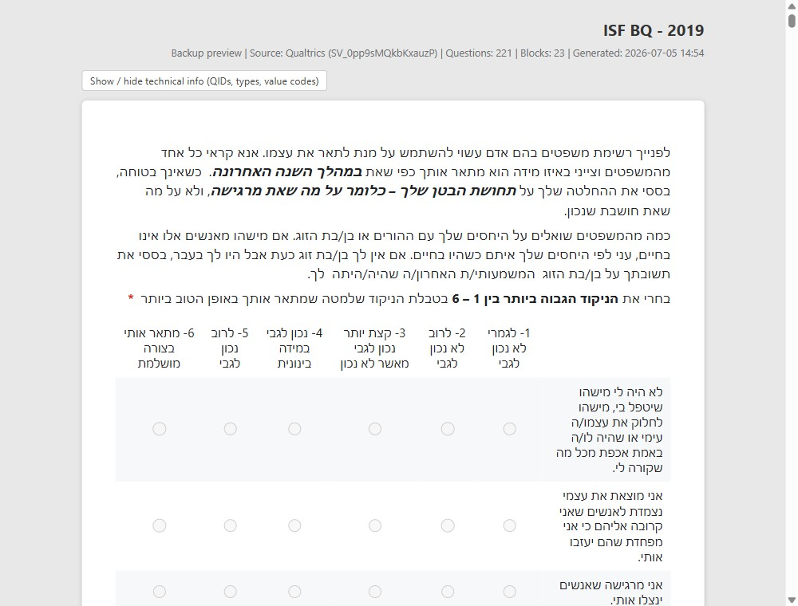
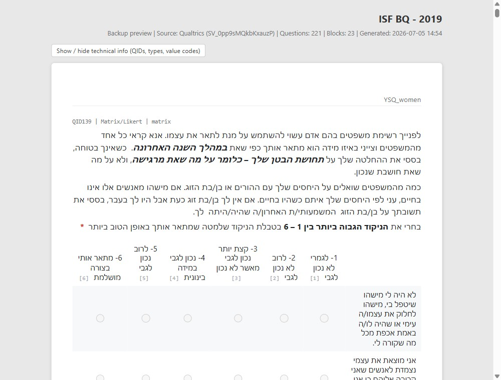

גרסה 2.0 · עודכן 16.07.2026 · חינם לשימוש מחקרי
גיבוי מקומי מלא של כל השאלונים בחשבון הקוולטריקס שלכם — המבנה, כל התשובות ותצוגה קריאה של כל שאלון — בפורמטים פתוחים שנפתחים בכל דפדפן, בלי אינטרנט ובלי קוולטריקס.
SHA-256: d207925f2cd82f1735e0f3e5dc77abe9e449ffed794c2f1d2c2fe7fba3167bc6
מורידים את ה-ZIP ומחלצים (קליק ימני ובוחרים Extract All).
מתקינים R (חד-פעמי) ולוחצים פעמיים על Run Me (Windows).cmd (במק: Run Me (Mac-Linux).command).
מדביקים את הטוקן, לוחצים Test connection ואז Start backup — והכל אצלכם במחשב.
01 · מה מקבלים
הכלי מוריד לכל שאלון את הנתונים, את המבנה המלא ואת התצוגה — כך שגם אם קוולטריקס תיעלם מחר, לא איבדתם כלום: לא את התשובות, לא את השאלון עצמו, ולא את הלוגיקה של מי ראה מה.
ובנוסף, לכל ריצת גיבוי: _index.html — דף אינדקס לחיץ עם כל השאלונים, קישורים לכל הקבצים ומילון מונחים מלא בשפה פשוטה — וקובץ _responses_summary.txt שמסכם בדיוק אילו תשובות גובו.


02 · התקנה בשלוש דקות
R היא תוכנת הסטטיסטיקה החינמית שמריצה את הכלי. לא תצטרכו לפתוח אותה אף פעם — רק שתהיה מותקנת. כל השאר קורה בלחיצה כפולה.
פותחים ידנית את הכתובת http://127.0.0.1:4975. הכלי רץ רק על המחשב שלכם (localhost) — אף אחד אחר ברשת לא יכול לגשת אליו.
03 · שימוש
הכלי נפתח בדפדפן ומוליך אתכם צעד-צעד, כולל מדריך מובנה להשגת הטוקן ("How do I get my API token?") שכתוב למי שלא יודע כלום על APIs.
שלושה כרטיסים פשוטים: Connect (טוקן + כתובת שרת, עם מדריך מובנה להשגת הטוקן), Output (בחירת תיקיית היעד) ו-Run backup. במהלך הריצה מוצג לוג חי של כל שלב, ובסוף — סיכום התוצאות וכפתור Open output folder שפותח את תיקיית הגיבוי.
04 · מה חדש בגרסה 2
גרסה 2 (16.07.2026) נולדה מריצה אמיתית שבה 2 מתוך 37 שאלונים גובו בלי התשובות — והלוג לא אמר את זה בקול רם מספיק. עכשיו הוא צועק.
הריצה מסתיימת ב-RESPONSE BACKUP SUMMARY — בלוג וגם כקובץ _responses_summary.txt בתיקיית הגיבוי: כמה שאלונים גובו עם התשובות, אילו היו ריקים (תקין), ואילו עדיין מחזיקים נתונים בקוולטריקס שלא גובו — עם ספירת תשובות לכל שאלון. "35 הצליחו, 2 נכשלו" כבר לא יכול להסתיר מה בדיוק חסר.
שאלון עם אפס תשובות מוקלטות מקבל קובץ סימון ברור במקום קבצי תשובות, והלוג אומר במפורש שזו לא שגיאה ("nothing to export"). ריצה חוזרת מזהה את הסימון ולא מנסה את השאלון שוב סתם.
כשהורדת תשובות נכשלת, הכלי מנסה שוב פעם אחת, אוטומטית (אחרי 5 שניות). אם עדיין נכשל — נכתב לתוך תיקיית השאלון קובץ שמסביר בדיוק מה חסר, כמה תשובות קיימות בקוולטריקס, מה הייתה השגיאה, ומה עושים.
שגיאות ייצוא על שאלונים ששותפו איתכם אך שייכים לחשבון אחר מקבלות עכשיו הסבר ברור ישירות בלוג: מה קרה, למה, ושהפתרון הוא גיבוי עם הטוקן של חשבון הבעלים. הסיפור המלא בפתרון תקלות.
05 · פתרון תקלות
| בעיה | פתרון |
|---|---|
| לחיצה כפולה פותחת חלון שנסגר מיד | R לא מותקן — מתקינים מ-cran.r-project.org (או מריצים את Check R (Windows).cmd לבדיקה). |
| "Connection failed: Unauthorized" | טוקן שגוי או כתובת שרת שגויה — מעתיקים שוב את שניהם. הכתובת מופיעה בשורת הכתובת כשמחוברים לקוולטריקס (something.qualtrics.com, בלי https://). |
| הדפדפן לא נפתח | נכנסים ידנית ל-http://127.0.0.1:4975. |
| עברית נראית שבורה באקסל | פותחים את קבצי ה-.xlsx (לא את ה-CSV), או מייבאים את ה-CSV כ-UTF-8. |
| שאלון מסומן "partial" באינדקס | פותחים את _errors.log בתיקיית הגיבוי לסיבה המדויקת, ומריצים שוב — הגיבוי ממשיך מאיפה שעצר (מה שהושלם מדולג). |
| בתיקיית שאלון אין קבצי responses_... | מסתכלים מה יש בתיקייה: NO_RESPONSES.txt = לשאלון אין תשובות, לא אבד כלום. MISSING_RESPONSES_README.txt = ההורדה נכשלה — פותחים אותו לסיבה ולפתרון, ומריצים שוב על אותה תיקיית גיבוי. |
הטוקן הוא מפתח גישה אישי — מחרוזת ארוכה של אותיות ומספרים — שמאפשרת לכלי לקרוא את השאלונים של החשבון שלכם. משיגים אותו כך:
אין כפתור Generate Token? מנהל הקוולטריקס של המוסד שלכם צריך לאפשר גישת API לחשבון — פנו אליו.
06 · שאלות נפוצות
לא. הכלי קורא בלבד: הוא אף פעם לא משנה, לא יוצר ולא מוחק שום דבר בחשבון. הוא פונה רק לנקודות קצה של קריאה (רשימת שאלונים, מבנה, ייצוא תשובות).
רק בזיכרון של האפליקציה, ורק כל עוד הלשונית פתוחה. הוא לא נכתב לקובץ, לא נרשם ללוג, ונמחק כשסוגרים את הדפדפן — או מיד, בלחיצה על "Clear token from session".
לא. הכלי רץ רק על המחשב שלכם (localhost — אף אחד ברשת לא יכול לגשת אליו), מתקשר ישירות עם קוולטריקס ב-HTTPS, ושומר את הגיבוי בתיקייה שבחרתם. שום דבר לא מועלה לשום מקום.
זכרו: תיקיית הגיבוי מכילה נתוני נבדקים — שמרו עליה לפי כללי ה-IRB והפרטיות של המוסד שלכם.
לא. R רק צריכה להיות מותקנת — אף פעם לא פותחים אותה. כל העבודה נעשית בלחיצה כפולה על Run Me (Windows).cmd (במק: Run Me (Mac-Linux).command) ובדפדפן.
כן. בתיקיית השאלון שמור survey.qsf — קובץ השחזור. בקוולטריקס: Create New Project > Survey > Import a QSF file, בוחרים את הקובץ — והשאלון חוזר, ניתן לעריכה.
פשוט מריצים שוב על אותה תיקיית גיבוי. שאלונים שכבר הושלמו מדולגים אוטומטית (resume), ורק מה שחסר או חדש מנוסה.
המבנה שלהם (QSF, תצוגות, קודבוק) יגובה. הורדת התשובות עלולה להיכשל (404/400) כי קוולטריקס דורשת את הרשאות הבעלים לייצוא תשובות — הפתרון הוא גיבוי עם הטוקן של חשבון הבעלים. ההסבר המלא למעלה.
הכלי עובד עם כל חשבון קוולטריקס שיש לו גישת API, בכל מוסד. כתובת השרת נלקחת משורת הכתובת של הדפדפן (something.qualtrics.com). אם אין כפתור Generate Token — מנהל הקוולטריקס המוסדי צריך לאפשר גישת API לחשבון שלכם.
כלום. הכלי חינמי לשימוש מחקרי, ו-R חינמית לחלוטין.
07 · ENGLISH SUMMARY
What it is. A free tool that downloads a complete local backup of every survey in a Qualtrics account: the structure (an editable survey.qsf restore file, codebook, question list, survey flow and display logic), all responses (numeric CSV/RDS for analysis plus labeled CSV/XLSX for reading, Hebrew-safe), and offline HTML/Word previews that look like Qualtrics. Everything is saved in open formats that need no Qualtrics, no internet, and no login.
Install (3 minutes). Install R (free, from cran.r-project.org) — you never open R itself. Download the ZIP above, extract it, and double-click Run Me (Windows).cmd (Mac: Run Me (Mac-Linux).command). On the first run, R packages install automatically (2–5 minutes, once). A browser tab opens with the tool. Not sure if R is installed? Double-click Check R (Windows).cmd.
Use. Get your API token in Qualtrics (account icon → Account Settings → Qualtrics IDs → API → Generate Token — treat it like a password: never email or share it; the tool keeps it in memory only, never on disk). Paste it, click Test connection & list surveys, pick surveys (default: all), and click Start backup. The run ends with a RESPONSE BACKUP SUMMARY telling you, survey by survey, whose responses are safely backed up, which surveys had none to begin with (fine), and which still have data waiting in Qualtrics (also saved as _responses_summary.txt). Re-running on the same backup folder resumes: completed surveys are skipped.
Safety. Read-only against Qualtrics — it can never modify or delete anything in your account. The app is reachable only from your own computer (localhost). Nothing is uploaded anywhere; treat the backup folder per your IRB obligations.
New in version 2.0 (2026-07-16). The end-of-run summary above; NO_RESPONSES.txt markers for zero-response surveys (nothing was lost); an automatic retry plus a MISSING_RESPONSES_README.txt written into the survey folder when a response export fails — usually a survey shared with you but owned by another account (back it up with the owner's token); and plain-language explanations for those 404/400 errors right in the log.
Download. qualtrics_backup_shiny.zip (85 KB; SHA-256 in the footer).
Contact. Built by Elad Refoua (Bar-Ilan University) + Claude. Free for research use. Questions: eladrefoua@gmail.com.
הורדה, חילוץ, לחיצה כפולה — והכל אצלכם במחשב.